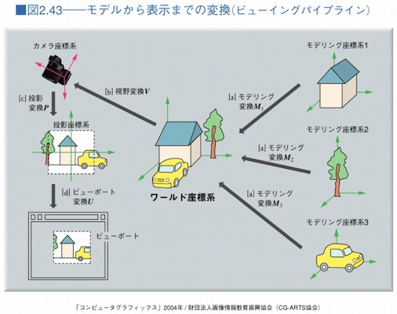
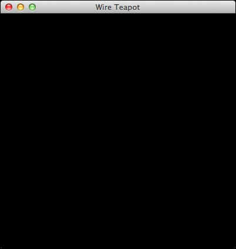

ウィンドウの大きさを変化させると、OpenGLの表示領域（GLキャンバスの大きさ）も変化します。表示領域の変化に追随できるように「Version 4」を「Version 5」へとバージョンアップしましょう。「tryjogl」ディレクトリ（パッケージ）にある「Example.java」の中身を、以下のソースコードと同じになるように直してください。編集するところをハイライトで表しておきます。
package tryjogl;
import com.jogamp.opengl.GL;
import com.jogamp.opengl.GL2;
import com.jogamp.opengl.glu.GLU;
import com.jogamp.opengl.util.gl2.GLUT;
import com.jogamp.opengl.awt.GLCanvas;
import com.jogamp.opengl.GLAutoDrawable;
import com.jogamp.opengl.GLCapabilities;
import com.jogamp.opengl.GLEventListener;
import com.jogamp.opengl.GLProfile;
import javax.swing.JFrame;
import java.awt.event.WindowAdapter;
import java.awt.event.WindowEvent;
/**
* JOGL（Java bindings for OpenGL）の例題プログラムである。
* OpenGLを使ったJavaによる三次元グラフィックスの初歩的な練習になる。
*/
public class Example extends WindowAdapter implements GLEventListener
{
/**
* GLオブジェクトを記憶するフィールドである。
*/
protected GL2 gl;
/**
* GLユーティリティを記憶するフィールドである。
*/
protected GLU glu;
/**
* GLユーティリティツールキットを記憶するフィールドである。
*/
protected GLUT glut;
/**
* ビューの幅を記憶するフィールドである。
*/
protected int width;
/**
* ビューの高さを記憶するフィールドである。
*/
protected int height;
/**
* Exampleのコンストラクタである。
*/
public Example()
{
System.out.println("Example");
// OpenGL描画のためのキャンバスを生成する。
GLProfile profile = GLProfile.get(GLProfile.GL2);
GLCapabilities capabilities = new GLCapabilities(profile);
capabilities.setDoubleBuffered(true);
GLCanvas aCanvas = new GLCanvas(capabilities);
aCanvas.addGLEventListener(this);
// フレームを生成し、上記のキャンバスを乗せて、ウィンドウとして開く。
JFrame aFrame = new JFrame("Wire Teapot");
aFrame.add(aCanvas);
aFrame.addNotify();
int titleBarHeight = aFrame.getInsets().top;
aFrame.setSize(400, 400 + titleBarHeight);
aFrame.setLocationRelativeTo(null);
// aFrame.setDefaultCloseOperation(JFrame.DO_NOTHING_ON_CLOSE);
aFrame.addWindowListener(this);
aFrame.setFocusable(false);
aFrame.setVisible(true);
return;
}
/**
* OpenGL起動時に初期化のために呼び出される。
* @param aDrawable OpenGLの描画ダーゲット
*/
public void init(GLAutoDrawable aDrawable)
{
System.out.println("init");
// グラフィックライブラリ（gl）を獲得し、
// グラフィックライブラリユーティリティ（glu）と
// グラフィックライブラリユーティリティツールキット（glut）を生成する。
this.gl = aDrawable.getGL().getGL2();
this.glu = new GLU();
this.glut = new GLUT();
// 材質の有効化
// 陰線隠面処理の有効化
// 片面表示機能の無効化
// 法線ベクトルの有効化
this.gl.glEnable(GL2.GL_COLOR_MATERIAL);
this.gl.glEnable(GL2.GL_DEPTH_TEST);
this.gl.glDisable(GL2.GL_CULL_FACE);
this.gl.glEnable(GL2.GL_NORMALIZE);
return;
}
/**
* OpenGL描画を行う際に呼び出される。
* @param aDrawable OpenGLの描画ダーゲット
*/
public void display(GLAutoDrawable aDrawable)
{
System.out.println("display");
return;
}
/**
* OpenGL表示モードや表示デバイスが変更された際に呼び出される。
* @param aDrawable OpenGLの描画ダーゲット
* @param modeChanged 表示モードが変更されたか否か
* @param deviceChanged 表示デバイスが変更されたか否か
*/
public void displayChanged(GLAutoDrawable aDrawable, boolean modeChanged, boolean deviceChanged)
{
System.out.println("displayChanged");
return;
}
/**
* OpenGLの資源が破棄された際に呼び出される。
* @param aDrawable OpenGLの描画ダーゲット
*/
public void dispose(GLAutoDrawable aDrawable)
{
System.out.println("dispose");
return;
}
/**
* OpenGL表示領域が変更された際に呼び出される。
* @param aDrawable OpenGLの描画ダーゲット
* @param x 表示領域のX座標
* @param y 表示領域のY座標
* @param w 表示領域の幅
* @param h 表示領域の高さ
*/
public void reshape(GLAutoDrawable aDrawable, int x, int y, int w, int h)
{
System.out.println("reshape");
this.width = w;
this.height = h;
this.gl.glViewport(0, 0, width, height);
return;
}
/**
* ウィンドウを閉じようとした時に呼び出される。
* @param aWindowEvent ウィンドウイベント
*/
public void windowClosing(WindowEvent aWindowEvent)
{
// System.out.println(aWindowEvent.paramString());
// 終了する。
System.exit(0);
return;
}
/**
* 針金細工のティーポット（Wire Teapot）を描くOpenGLのウィンドウを開く。
* @param arguments コマンドの引数列（文字列の配列）
*/
public static void main(String[] arguments)
{
System.out.println("main");
new Example();
return;
}
}
当該のExampleのクラスに新たな2つフィールド（インスタンス変数）を加えます。GLキャンバスの幅（width）と高さ（height）を記憶しておくためです。
そして、ウィンドウ（フレーム）の大きさが変化することによって、OpenGL表示領域（GLキャンバスの大きさ）が変更された際に呼び出されるreshape(…)の実装を行います。
ExampleのインスタンスはGLイベントリスナーとして動作していますので、GLキャンバスの大きさに変化が生じると、その位置（xとy）、加えて、大きさ（wとh）が、reshape(…)の引数として通知されます。その大きさを先ほどの2つフィールドへ記憶します。その後、GL2に向かって「glViewport(int, int, int, int)」のメッセージを発信して、OpenGLのビューポート（ウィンドウのどの範囲に描画を収めるか）の設定を行います。次の図のビューポート変換の設定に相当します。

では、ビルドして実行してみましょう。今回も結果は変わりませんけどね。
$ make test
env LC_ALL=ja_JP.UTF-8 ant test
Picked up _JAVA_OPTIONS: -Dfile.encoding=UTF-8
Buildfile: /Users/aoki/Desktop/Version5/build.xml
prepare:
[exec] 2019年 12月20日 金曜日 13時01分48秒 JST
compile:
[javac] Compiling 1 source file to /Users/aoki/Desktop/Version5/Classes
[javac] Picked up _JAVA_OPTIONS: -Dfile.encoding=UTF-8
[exec] 2019年 12月20日 金曜日 13時01分50秒 JST
jar:
[jar] Building jar: /Users/aoki/Desktop/Version5/tryjogl.jar
[jar] Building jar: /Users/aoki/Desktop/Version5/tryjogl-natives-macosx-universal.jar
[exec] 2019年 12月20日 金曜日 13時01分51秒 JST
all:
[exec] 2019年 12月20日 金曜日 13時01分51秒 JST
test:
[exec] Picked up _JAVA_OPTIONS: -Dfile.encoding=UTF-8
[exec] main
[exec] Example
[exec] init
[exec] reshape
[exec] display
[exec] display
[exec] dispose
[exec] 2019年 12月20日 金曜日 13時01分57秒 JST
BUILD SUCCESSFUL
Total time: 9 seconds
$
